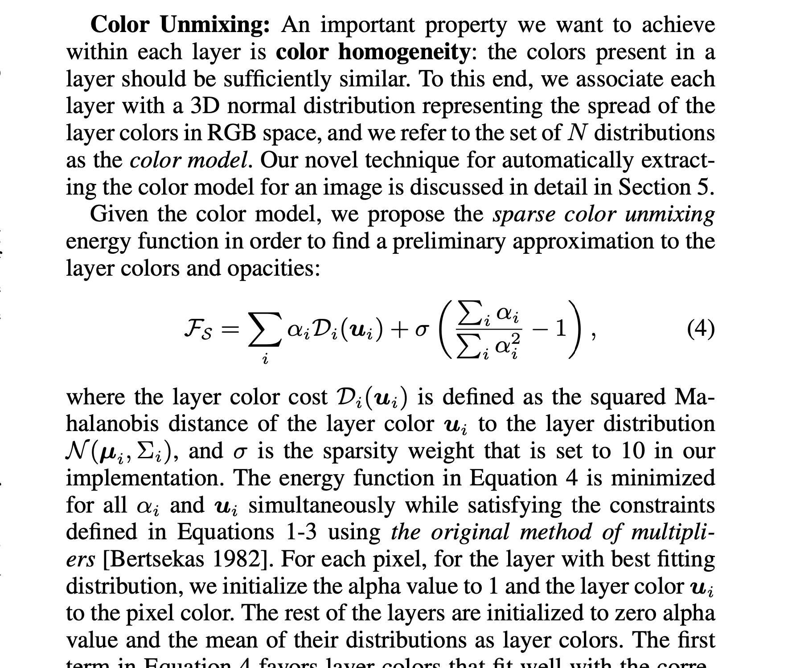
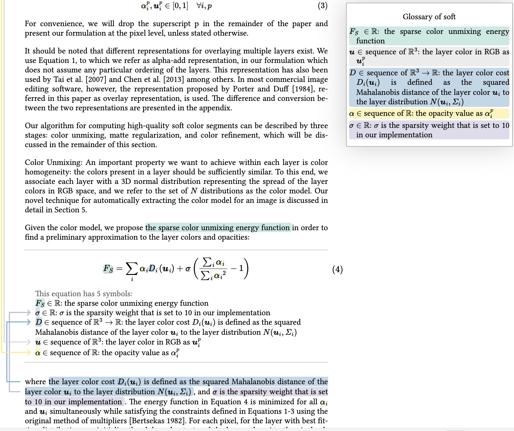

Unmixing-Based Soft Color Segmentation for Image Manipulation
Yagiz Aksoy, Tunc Ozan Aydin, Aljoscha Smolic and Marc Pollefeys
SIGGRAPH North America 2017
H❤️rtDown source
(paper section)
H❤️rtDown-generated code libraries
Existing implementation
source code
before modification
and
modified to call H❤️rtDown-generated code
Original Paper [PDF]
H❤️rtDown Paper Viewer

